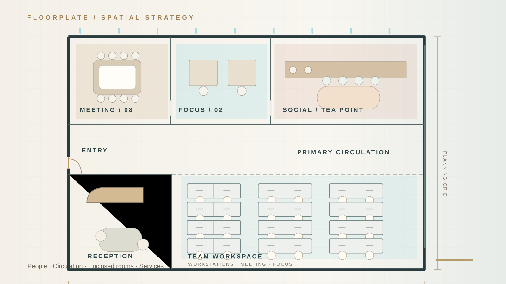

Understand people and activities
Explore headcount, working patterns, visitors, privacy, accessibility and the mix of work settings.

Workplace / design & planning
We bring spatial planning, meeting spaces, lighting and materials into one clear brief — before a single finish is chosen.
Discuss workplace design
THE FLOORPLATE / SPATIAL STRATEGY
Reception, meeting rooms, focus space, workstations and services must operate as one coherent floorplate. We test these relationships, room by room, before settling on a layout.

01 / PeopleWork settings shaped around activity, privacy and the way teams meet.
02 / MovementClear arrivals, direct circulation and comfortable shared space.
03 / BuildabilityDoors, power, lighting, ventilation and furniture coordinated early.
Build your space briefFROM IDEA TO IMAGE / THE DESIGN PROCESS
Explore the same interior through sketch, CAD and CGI. Each stage helps align the brief, spatial layout, services, lighting and material choices before construction.

01 / Bring your ideas into focus.
Choose a view above, drag across the image or use the slider.
Explore an illustrative concept through the brief, layout and character of the space.
Illustrative design study: the drawings and CGI show the same proposed interior at three levels of detail. They are not photographs of a completed BAMBU project.
FROM BRIEF TO BUILDABLE PLAN
Explore headcount, working patterns, visitors, privacy, accessibility and the mix of work settings.
Plan circulation, meeting rooms, focus spaces, breakout areas and front-of-house relationships.
Bring building services, lighting, acoustics, AV, IT and furniture into the design process.
Compare finishes and products for suitability, cost, durability and maintenance.
Start a conversation
A brief outline of the location, floor area and programme is enough to begin.
Get in touchPROJECT NOTE
Balance collaboration with concentration, acoustic privacy, accessibility, storage and reliable meeting technology. A good-looking room is only part of the answer.